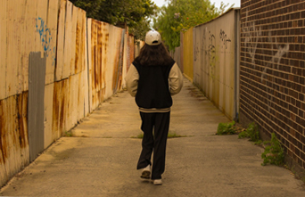

Home
why do i like photography?
I like photography becuase I can be as creative as I want. Anything can be considers 'Art' so to me taking photos is one of my favourite ways of making art.
Photography allows me to capture special moments and things I find interesting.
Its a fun side hobbie. I also do Media in school.

When did i start?
Both my Father and Auntie studied Photography so I would alsways see them with their cameras. As a young kid it really made me curious and every now and then I would play around the the cameras. As I got older I have taken some of their interest to capture photos. Now I am the one who uses the camera but most of the time it just sits in the cupboard becuase I use my phone for everything nowdays. So I only take the camera out when I feel like it.